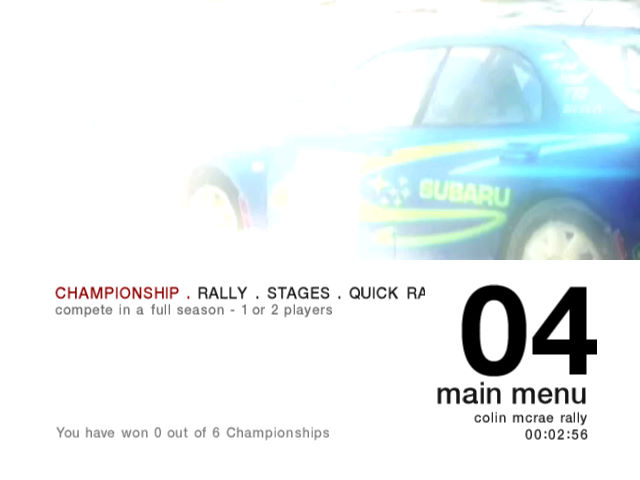
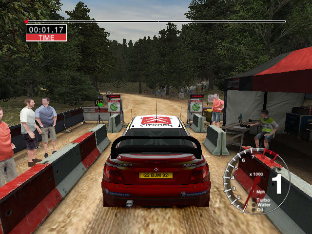

名稱：科林麥克雷拉力賽車4／越野菁英賽04 (Colin McRae Rally 04，英文版)
簡介：Codemasters 2003年出品的越野賽車遊戲，2004年移植到Windows，由Atari代理發行
[待補]。


保護：光碟SecuROM 5.02
備註：本遊戲有2003年的4CD版，以及2005年的1.1 DVD版兩種光碟。
檔案：nocd10.rar = 1.0免光碟檔
nocd11.rar = 1.1免光碟檔